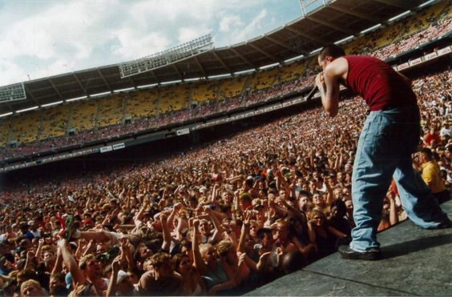
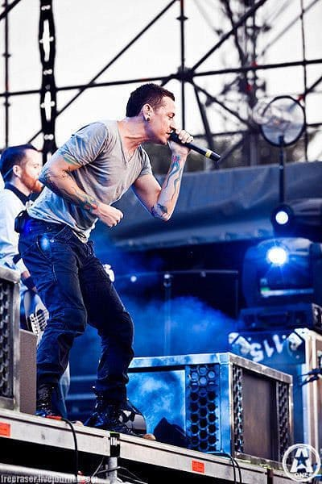
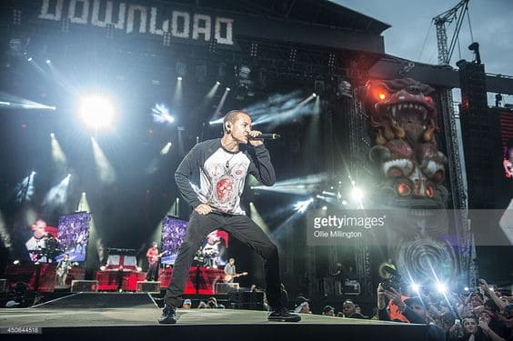
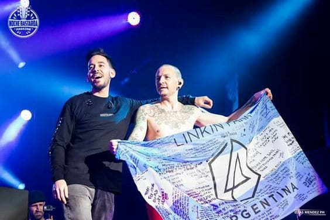

El grupo realizó numerosos tours cada vez que salía un nuevo álbum:
Hybrid Theory Tour (2000-2002)
Este tour marcó un momento crucial en la carrera de Linkin Park, ya que les permitió presentarse en diferentes ciudades y países, y les brindó la oportunidad de conectarse con sus fanáticos de todo el mundo. Durante esta gira, la banda experimentó un crecimiento exponencial de su base de seguidores y se convirtió en una de las bandas más destacadas de la escena musical.
Meteora World Tour (2003-2004)
Esta gira se llevó a cabo desde 2003 hasta 2004 y fue un gran éxito para la banda, consolidando aún más su popularidad a nivel mundial. Durante el Meteora World Tour, Linkin Park visitó numerosos países y continentes, ofreciendo actuaciones en algunas de las principales ciudades y arenas de todo el mundo, tales sitios como Los Angeles, Texas, Nueva York, Francia, Italia, China, Japón y Australia, por nombrar algunos lugares.
O algunos festivales donde formaron parte:
Download Festival
Este festival de rock y metal tiene lugar en Donington Park, Reino Unido. Linkin Park ha sido parte del cartel en varias ediciones, deleitando a los fanáticos con sus enérgicas actuaciones
Rock Am Festival
Estos festivales de rock se llevan a cabo simultáneamente en Nürburgring y Núremberg, Alemania. Linkin Park ha sido un acto recurrente en ambos eventos, ofreciendo actuaciones memorables a lo largo de los años.
Visitas a Argentina
El grupo visito la República Argentina en tres ocasiones: el 7 de octubre de 2010 en el estadio Velez Sarsfield en donde fue parte de la gira del lanzamiendo del álbum "A Thousand Suns". Luego regresarían 2 años después el 5 de octubre de 2012 en el estadio G.E.B.A (sede Jorge Newbery) y la última visita fue por el Maximus Festival en Tecnópolis el 6 de mayo de 2017, un mes previo al fallecimiento de Chester Bennington.
